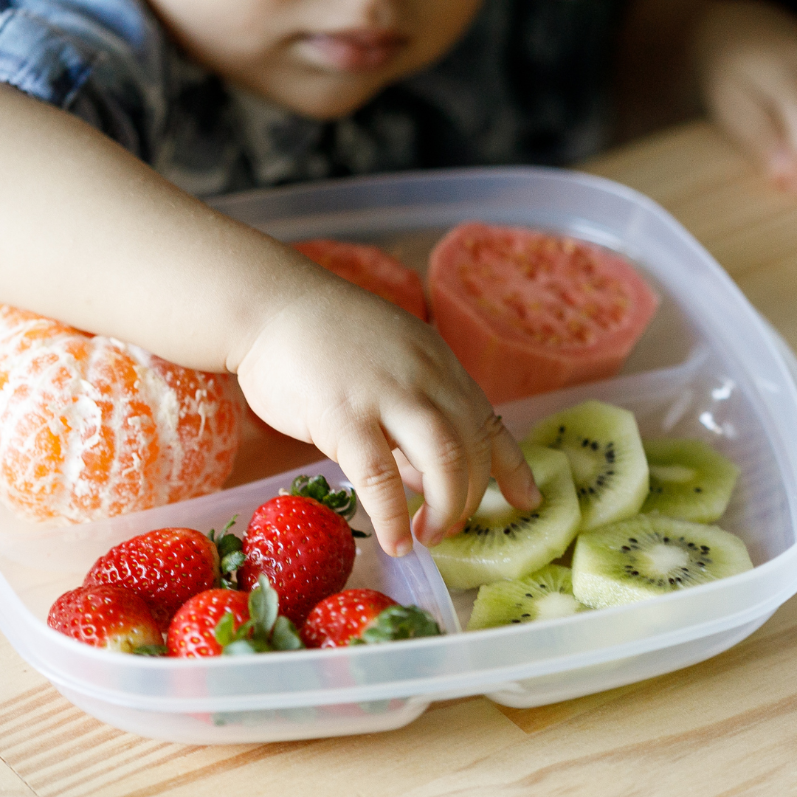
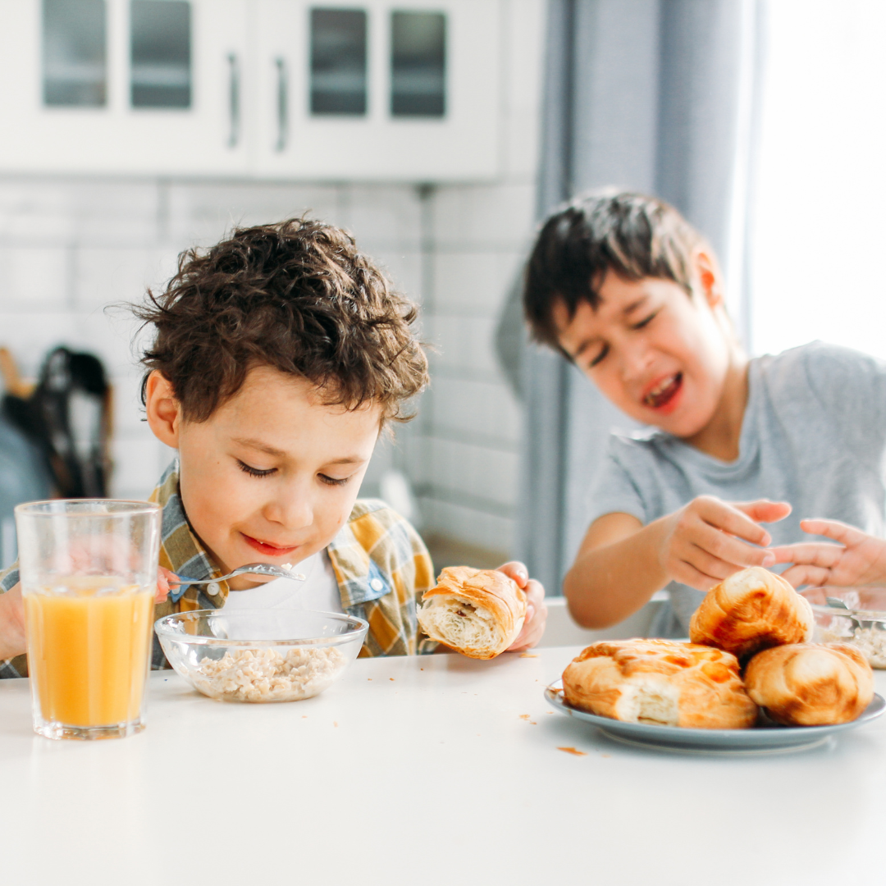
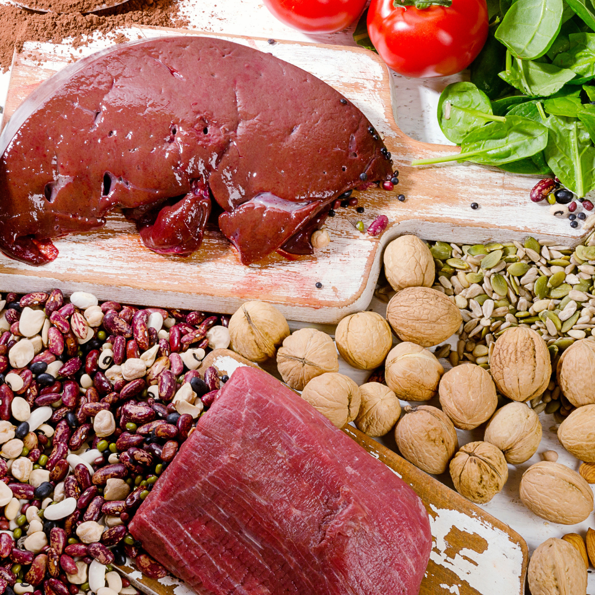

Nosso Blog
Como Introduzir Alimentos Sólidos de Forma Segura e Eficiente
Como lidar com a seletividade alimentar nas crianças?
A Importância do ferro na alimentação Infantil
Como prevenir e tratar a obesidade Infantil?

Assista Também!
FAQ
Quais são as perguntas mais frequentes?
Ele avalia e orienta a alimentação da criança para garantir um desenvolvimento adequado e equilibrado.
Quando ele apresentar dificuldades alimentares, alergias, ou precisar de orientação nutricional para um crescimento saudável.
Promove o crescimento saudável, previne doenças e melhora o desempenho escolar.
Ele cria um plano alimentar personalizado e dá dicas para tornar a alimentação mais atraente.
Não uma dieta restritiva, mas um plano alimentar saudável orientado por um nutricionista infantil.